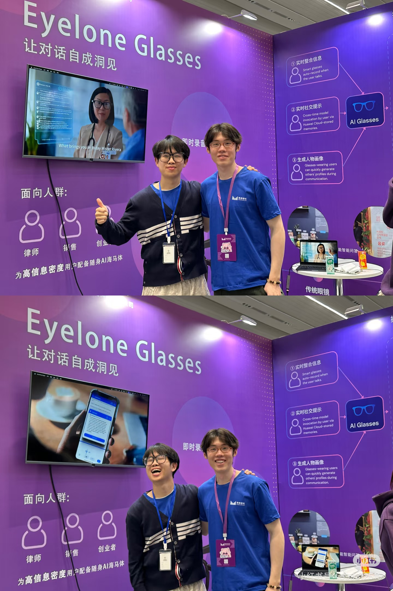
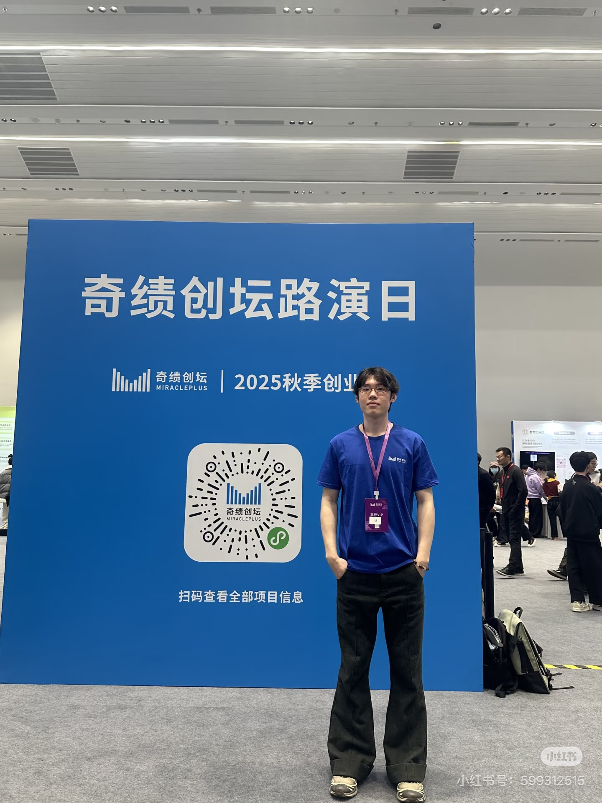
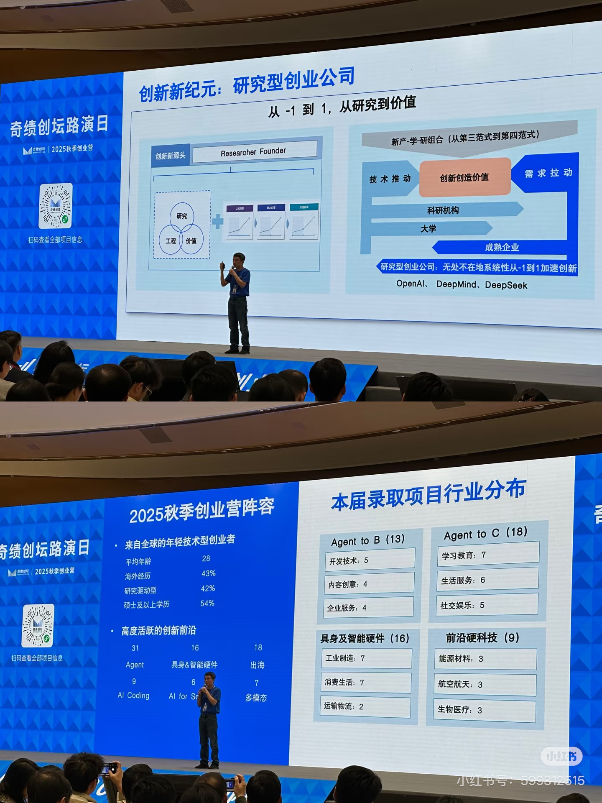

与前沿AI创业者的互动
Interaction with AI Entrepreneurs

在AI技术飞速发展的时代，我有幸与多位前沿AI创业者进行了深入的互动和交流。这些互动让我对AI行业的发展趋势、技术创新和商业应用有了更深刻的理解。



互动经历
2025年上半年我们（奇绩创坛的Startup School组）前往了11个城市的28所高校，调研了国内外的创新教育机构，为中国的创新教育体制做出一点点贡献。认识到了很多优秀的创业者，被他们这种不想碌碌无为，用十年的打拼追求财富和实现自我价值，替代五十年的重复劳动深深吸引。在2025春季创业营，和东升的小伙伴们在我们走过的高校展板前面合影，看了技术创业者们的路演介绍和demo展示，让我思考了很多如何用这些前沿技术赋能非技术背景创业者在传统领域还有企业管理上进行变革。希望更多的梁文锋、王兴兴能够从高中校园或者大学校园就能被发现，并赋予支持，支持他们通过创新创业改变世界。
2025秋季创业营又作为高校组VIP回来看创业春晚了，一边服务拜访过的高校老师，一边看完了三个多小时54个项目，电子宠物社交，旅游pilot，非技术背景也能无痛上手打造产品，癌症患者社区，预防疾病戒指，桌面陪伴，超低空卫星，捕鱼，Ai农业，仿生扑翼，眼花缭乱了，有几个片刻觉得自己也想过这个idea ，但是还是让那些懂技术懂商业会营销的年轻同辈做出来了，会场间隙又是一场酣畅淋漓的social ，准备和朋友一起把拿到的传单再捋一下。